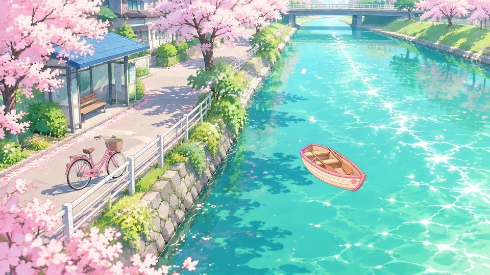
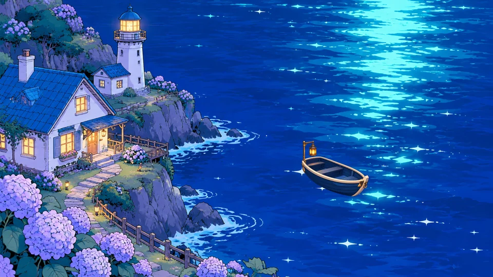
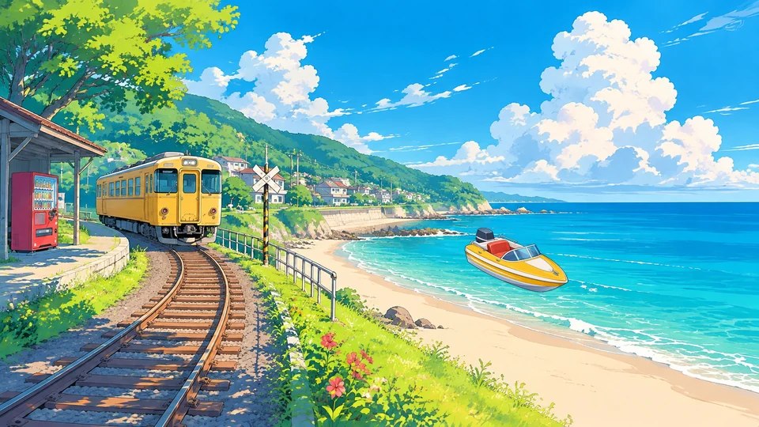
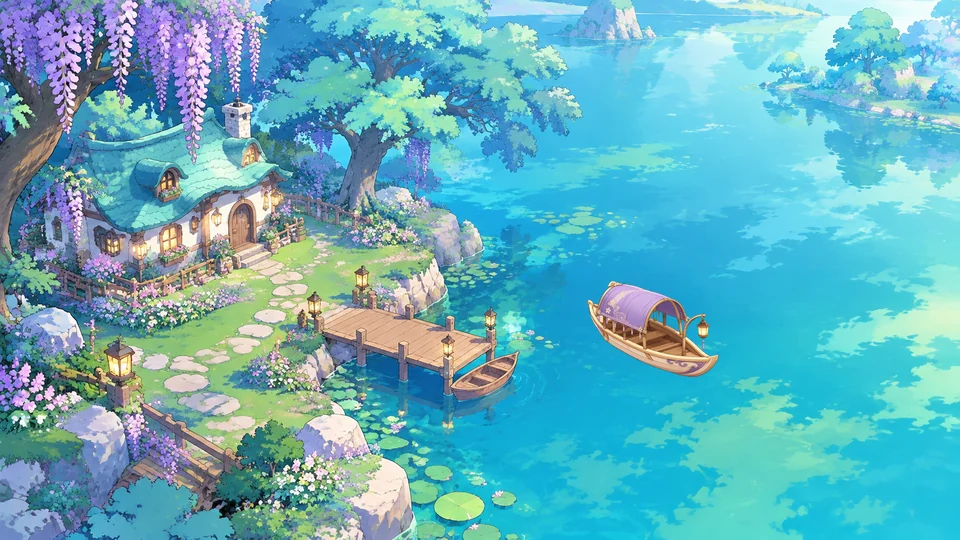
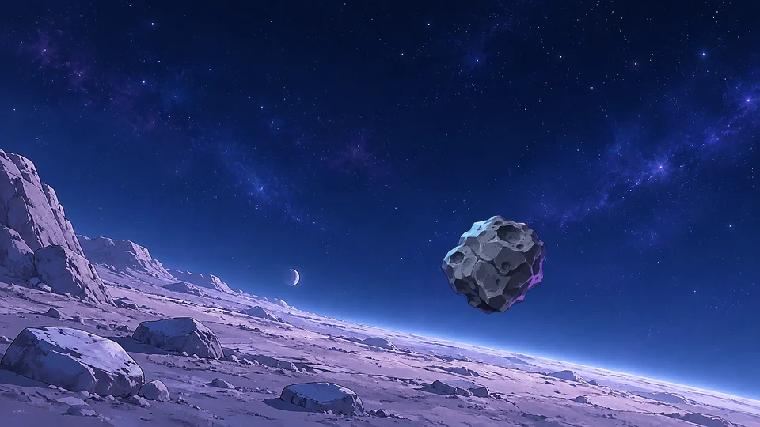
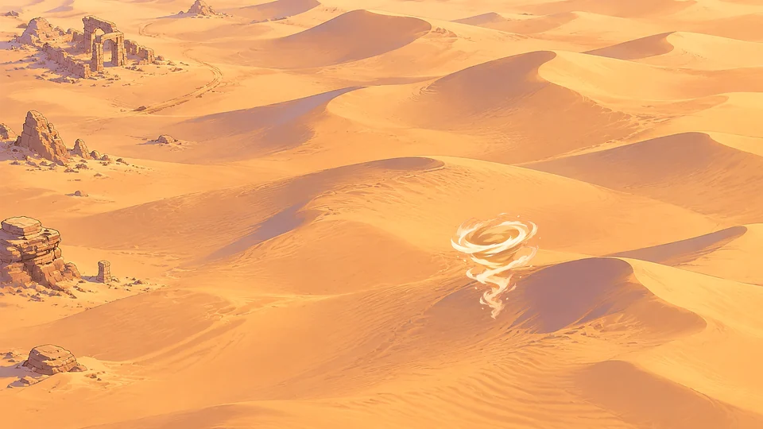

双击，打开原文件
小船链接着真实文件。名称随船同行，
熟悉的文件，换一种陪伴。
把桌面的文件、文件夹或快捷方式拖向海面，
它就变成一艘小船，随波慢慢漂流。
想用的时候，像平常一样打开。
小船链接着真实文件。名称随船同行，
熟悉的文件，换一种陪伴。
拖回岸边，恢复原来的桌面图标。
文件始终留在原处，不搬家。
前台窗口最大化或全屏覆盖主屏时暂停，
回到桌面，接着漂流。
三处风景，随时换一种心情。






一片海，几艘小船。
下次打开电脑，就能看见。
安装包暂时无法获取。查看 GitHub 发布页
单个 EXE，双击安装。无需注册，无需管理员权限。
缺少 WebView2 运行环境时，安装程序会联网补齐。
桌面小船链接原文件，软件会读取桌面文件的名称、路径和图标信息，用于显示和打开文件。转换成小船不会移动、重命名或改写原文件，也不会上传文件。通过管理窗口导入的文件副本保存在本机。
支持 Windows 10（1607 及以上）和 Windows 11 的 64 位电脑，当前只覆盖主显示器。需要 .NET Framework 4.6.2+ 和 Microsoft Edge WebView2 Runtime；缺少 WebView2 时安装程序会联网安装。macOS 暂不支持。
前台应用最大化或全屏覆盖主显示器、系统锁屏时，WhereFile 会暂停动画与桌面轮询，回到桌面后恢复。也可以随时在托盘里手动暂停。具体占用会随电脑配置和分辨率变化。
请先在管理窗口点击“设为桌面壁纸”，并关闭 Windows 桌面的“自动排列图标”。当前支持主显示器上的真实文件、文件夹和快捷方式；回收站、此电脑等系统图标暂不转换。
正常退出会恢复桌面图标。安装程序在升级或卸载前会通知 WhereFile 退出；若程序仍在运行，会提示先从托盘退出后重试。卸载保留本机文件库和设置，不删除原文件。
当前安装包尚未进行代码签名，Windows 可能会显示发布者未知的提示。请核对下载来源与安装包校验值；有疑问时先取消安装。源码可在 GitHub 查看，也可以在那里反馈。